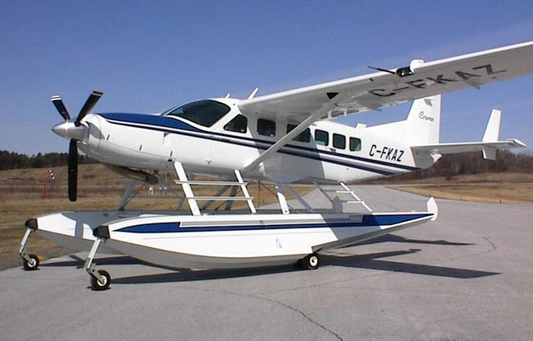

Travel & Tourism
Medical Tourism
Ever escalating costs of healthcare and medical treatment in developed countries, mostly in the western part of the world, is pushing patients towards the developing world, especially India. Huge growth in medical technology and methods, efficient and skilled medical professionals and affordable treatment is on offer. Apart from this, a medical tourist can also combine the medical treatment with a vacation in a different and exotic country!
Luminous plans and provides the whole medical journey.
Aviation
AirLuminous is a private charter airline, which operates its own full size Boeing luxury charter aircraft for tour operators, tourists, film crews, sports charters, business and industry, heads of state and governments, government and military use, etc. Also, shortly on offer are the services of 2 ATR-72 aircraft, connecting tourist destinations in and around the Indian Subcontinent. We take immense pride in offering services that are fast, friendly, safe and reliable.
Our air crew are exclusive and highly skilled. Each one of them is an expert in what he or she does. The charter routes are planned from all over the world to the high-in-demand Maldives, India and the Far East.
Amphibious light aircraft services
From the backwaters of Kerala to the beautiful, sun-washed beaches of the Maldives, Luminous operates three Cessna 208’s primarily for the transportation of tourists, government executives and businessmen also avail of this form of air travel, as these aircraft can operate from land and water. The uniqueness of landing on both types of surfaces results in an exhilarating experience at affordable prices, combined with easy and efficient commutes to and from any short haul tourist or business destination.
The tourist and business sector in the whole of India, the Maldives, Lakshadweep, the Andaman and Nicobar Islands and Sri Lanka benefits hugely from the operation of AirLuminous’s Cessna Caravan 208 turbo-prop amphibious aircraft, in the region.
Luxury Passenger Ferry
Luminous operates a high-speed, aluminium twin-hull, luxury ferry, from Kochi and Trivandrum to Lakshadweep, Andaman and Nicobar, the Maldives and Sri Lanka. With comfort for up to 350 passengers rivalling that of luxury airliners, this state-of-the-art craft cruises at a speed of 35 knots and maxes out at 42 knots. This ferry is powered by diesel engines driving two waterjet propulsion systems selected to achieve huge amounts of thrust, keeping in consideration prevalent marine conditions.